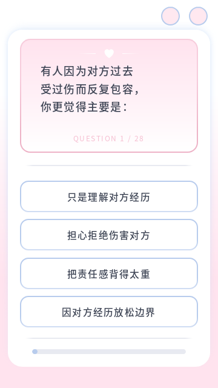
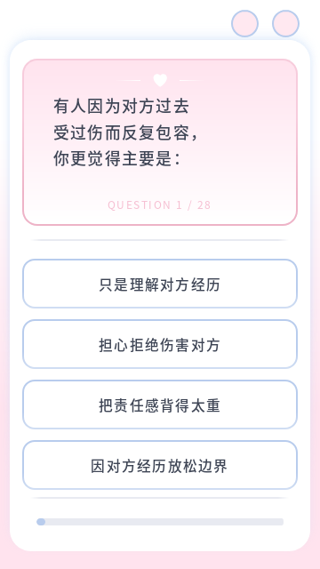
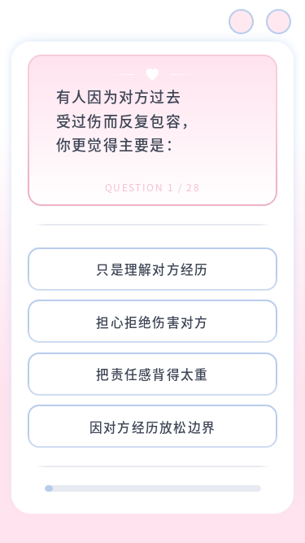
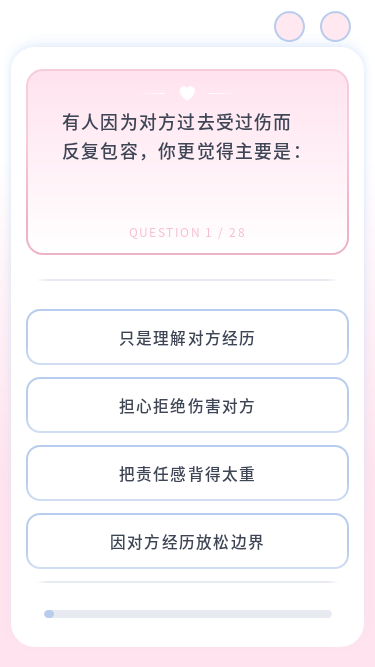
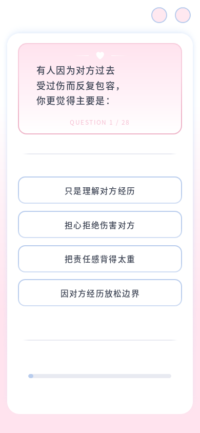
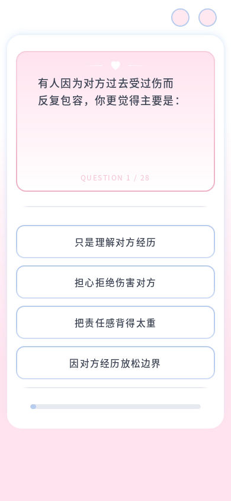
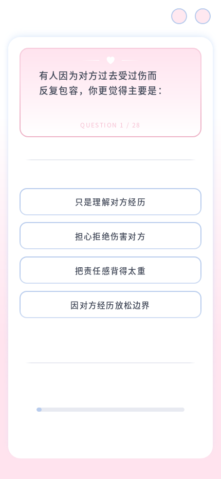
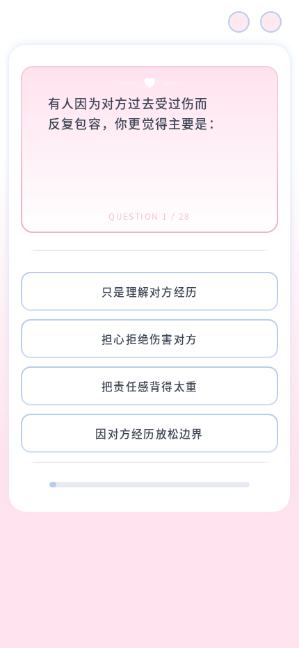
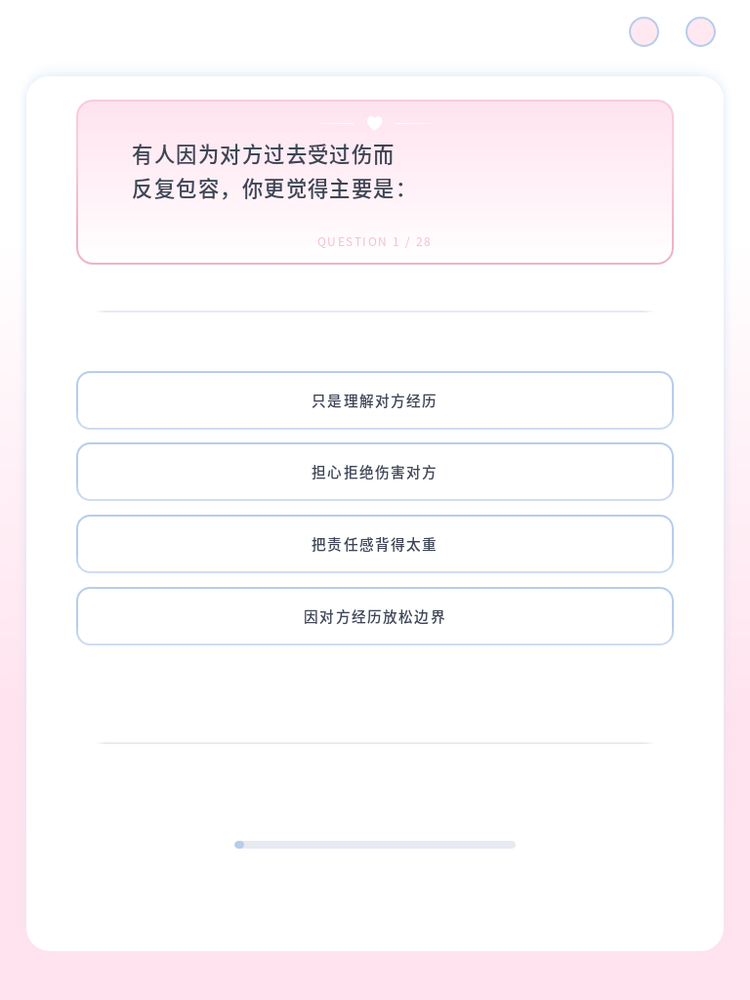
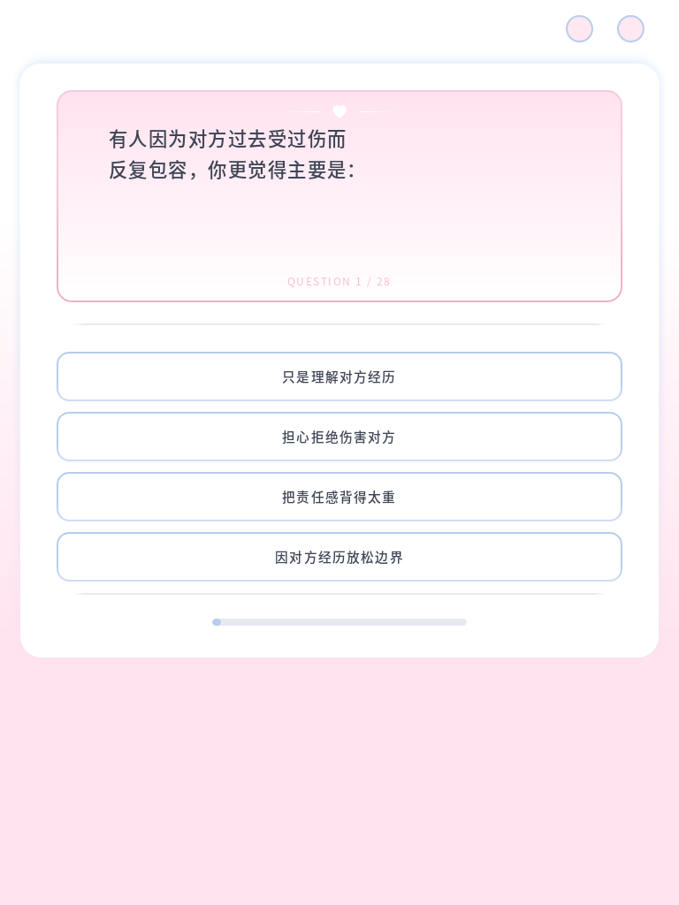

2026-10-12 · 本地 Firefox · 统一使用真实题库 C10 作为截图样例。尺寸均为 CSS 视口；点击图片可以查看原图。修改前后保持相同题目和选项文字。
题目、选项和进度条按正常文档流排列，仅两段有上限的留白吸收高度差异。长题和矮屏允许整页滚动，四个选项在所有尺寸下均为单列。
现有 Node 测试为 13/14 通过；唯一失败是题库维护源与运行 JSON 不一致，修改前快照也存在同样失败。本次没有同步或修改题库。
验证限制：未在两台实体设备上同时实测；本报告覆盖本地 Firefox 和两档实际浏览器缩放。已检查截图，未发现需要额外修正的重叠、裁切或超范围留白。
360×640 · 375×667 · 390×844 · 430×932 · 768×1024 · 1440×900 · 844×390
96 道题检查通过。C10 的题框高度 187.8px；留白 A / B：37.0px / 18.5px。


96 道题检查通过。C10 的题框高度 186.8px；留白 A / B：53.5px / 26.8px。


96 道题检查通过。C10 的题框高度 236.3px；留白 A / B：56.0px / 28.0px。


96 道题检查通过。C10 的题框高度 240.0px；留白 A / B：56.0px / 28.0px。


96 道题检查通过。C10 的题框高度 240.0px；留白 A / B：56.0px / 28.0px。


96 道题检查通过。C10 的题框高度 240.0px；留白 A / B：56.0px / 28.0px。
96 道题检查通过。C10 的题框高度 160.0px；留白 A / B：24.0px / 16.0px。
html/text.html：底部分隔线和进度区域进入同一个答题面板，保留既有 ID 与交互属性。css/content.css：统一外框与内容宽度、自然高度、四项单列和两段有界留白；移除裁剪、位移及高度倍率断点，保留原字体和视觉反馈。js/interactions/quiz-layout.js：保留短词保护，仅测量一个留白预算；rAF 合并更新，不再测量按钮倍率或分别移动组件。js/interactions/quiz.js：移除旧长题档位判断，保留选答、导航、存储、评分和换题回到顶部的行为。docs/technical-guide.md：记录当前高度分配规则，将旧比例调整标注为历史记录。